R/partial_response.R
partial_response.RdComputes and plots the trait-environment relationship of a given CWM trait and a focal environmental variable. In order to build the response curve, the function builts a dataframe where the focal environmental variable varies along a gradient and the other (non-focal) variables are fixed to their mean (but see FixX parameter for fixing non-focal variables to user-defined values).
partial_response(
m,
indexGradient,
indexTrait,
XFocal = NULL,
grid.length = 200,
FixX = NULL,
FullPost = "mean"
)a model fitted with jtdm_fit
The name (as specified in the column names of X) of the focal variable.
The name (as specified in the column names of Y) of the focal trait.
Optional. A gradient of the focal variable provided by the user. If provided, the function will used this gradient instead of building a regular one. Default to NULL.
The number of points along the gradient of the focal variable. Default to 200.
Optional. A parameter to specify the value to which non-focal variables are fixed. This can be useful for example if we have some categorical variables (e.g. forest vs meadows) and we want to obtain the partial response curve for a given value of the variable. It has to be a list of the length and names of the columns of X. For example, if the columns of X are "MAT","MAP","Habitat" and we want to fix "Habitat" to 1, then FixX=list(MAT=NULL,MAP=NULL,Habitat=1.). Default to NULL.
The type of predictions to be obtain. If FullPost = TRUE, the function returns samples from the predictive distribution. If FullPost="mean", the function computes the posterior distribution of the regression term B%*%X). Default to "mean", here FullPost cannot be FALSE.
A list containing:
A plot of the trait-environment relationship.
A data frame containing the predicted trait-environmental relationships including the gradient of the focal environmental variable, mean trait predictions and quantiles (can be useful to code customized plot).
data(Y)
data(X)
# Short MCMC to obtain a fast example: results are unreliable !
m = jtdm_fit(Y=Y, X=X, formula=as.formula("~GDD+FDD+forest"), sample = 1000)
# SLA-GDD relationship
plot = partial_response(m,indexGradient="GDD",indexTrait="SLA")
plot$p

# SLA-GDD relationship in forest (i.e. when forest=1)
plot = partial_response(m,indexGradient="GDD",indexTrait="SLA",
FixX=list(GDD=NULL,FDD=NULL,forest=1))
plot$p
